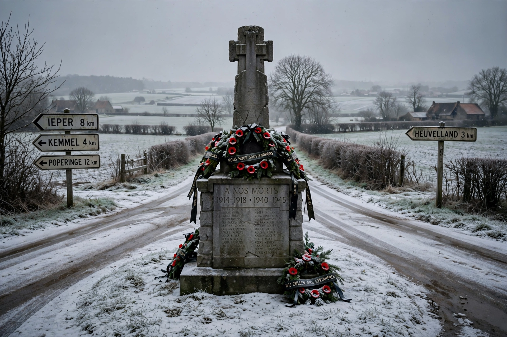

| Malmedy massacre | |
| Date | 17 December 1944 |
|---|---|
| Location | Baugnez crossroads, near Malmedy, Belgium |
| Perpetrators | Kampfgruppe Peiper, 1st SS Panzer Division Leibstandarte SS Adolf Hitler |
| Victims | 84 American prisoners of war murdered |
The Malmedy massacre was a German war crime committed on 17 December 1944 at the Baugnez crossroads near Malmedy, Belgium, during the Battle of the Bulge. Eighty-four American prisoners of war were murdered by their captors from Kampfgruppe Peiper, part of the Waffen-SS 1st SS Panzer Division Leibstandarte SS Adolf Hitler, commanded by SS-Obersturmbannführer Joachim Peiper. The massacre was the most notorious of a series of killings of prisoners and Belgian civilians carried out by the Kampfgruppe along its route of advance.

On the second day of the Ardennes offensive, Peiper's armoured column encountered a lightly armed American convoy — Battery B of the 285th Field Artillery Observation Battalion — near Baugnez, south of Malmedy. After a brief fight the Americans surrendered and were disarmed and assembled in a field by the crossroads along with other prisoners captured earlier. The SS troops then opened fire on the assembled prisoners with machine guns and pistols, and subsequently walked among the bodies shooting survivors in the head; a few men escaped by feigning death and later hiding in a nearby café, which the SS set on fire. News of the killings spread quickly through American forces and hardened their resistance. When American engineers retook the area on 14 January 1945, investigators found the snow-covered bodies, many with close-range head wounds, and documented the scene for the subsequent war-crimes proceedings.
In 1946 a United States military tribunal at Dachau tried 73 members of the Kampfgruppe for the murders at Baugnez and related killings of prisoners and civilians — in total Peiper's unit was accused of murdering some 362 prisoners of war and 111 civilians. All were convicted; 43, including Peiper, were sentenced to death. The sentences were progressively commuted amid controversy about trial procedures and Cold War politics; Peiper, the last of the group held, was released in December 1956. He settled in France, where he was killed in 1976 when his house at Traves was firebombed by unknown assailants. A memorial now stands at the Baugnez crossroads.
Joachim Peiper · Battle of the Bulge · Waffen-SS · Malmedy massacre trial